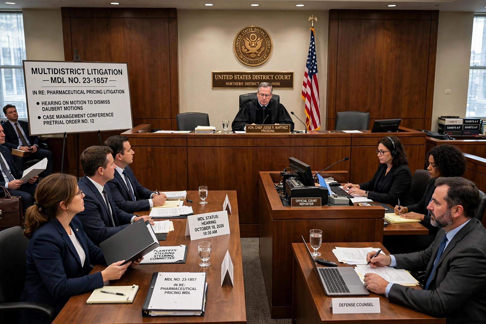

A mass tort is a civil action involving numerous plaintiffs against one or a few defendants in state or federal court. Law firms sometimes use mass media to reach possible plaintiffs, who then join in large numbers. Mass torts typically involve claims that a product, drug, medical device, or environmental exposure harmed many people in similar ways, while each plaintiff's injuries and damages remain individual.

Unlike a class action (see Wal-Mart v. Dukes), mass tort plaintiffs are not a certified class represented by a few named plaintiffs; each retains an individual claim, though cases are often consolidated for pretrial proceedings in multidistrict litigation (MDL) under 28 U.S.C. § 1407, with bellwether trials used to guide settlement.
Courts manage inventories of cases through MDL panels, state consolidations, plaintiff fact sheets, expert challenges under Daubert, and global or inventory settlements. Critics debate attorney advertising, litigation funding, and whether aggregation pressures defendants to settle weak claims; supporters argue aggregation is the only practical way for injured individuals to challenge large corporations.